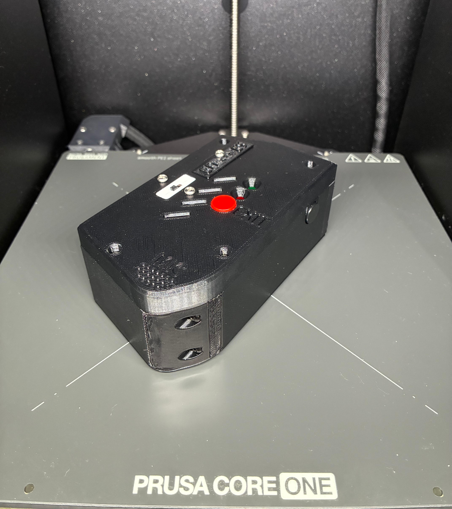
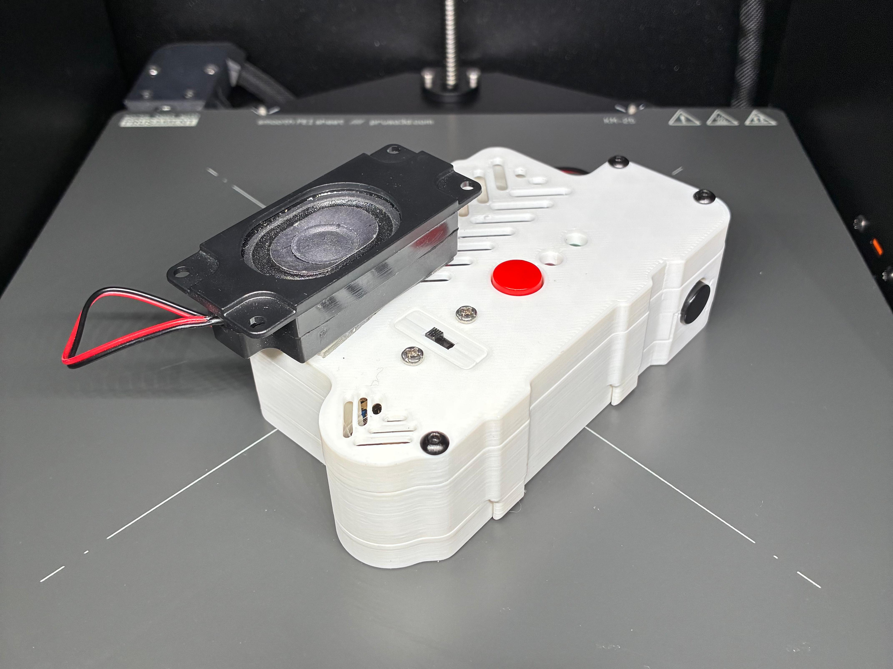
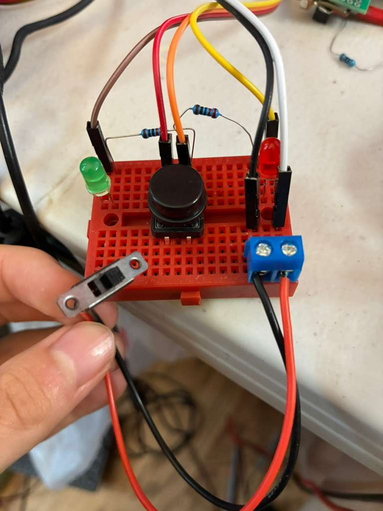
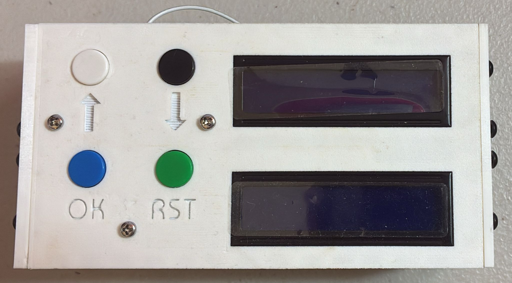

Offline Translator

Quick Introduction
A speech-to-speech translator running on a Raspberry Pi that works without an internet connection. Just funded by Nord Anglia's Social Impact Grant for further development. Check out the R&D Grant Submission Video here Look at it in action here!
Preface
This project started in June, 2025, right before a trip to Japan. I really wanted to speak Japanese and communicate with the local people, but with the trip looming ahead there was no time to learn Japanese. So, I put my engineering skills to good use and started developing an offline translator.
The Start
At first, I mainly focused on the translation part of my translator because, well, what would a translator be without a way to translate? The first translator library I used was Argos Translate. It was based on OpenNMT and let me download language pairs which I could then use. The main benefit of Argos Translate was its offline capabilities. An offline translator was the key to my whole project. A device that can translate languages on a WiFi or cellular connection was basically just a phone running Google Translate.

Unfortunately, due to a 3D printer issue, I was not able to finish EchoLingo in time for the trip to Japan. However, as soon as I got a new 3D printer, the case came together into the final version of EchoLingo V2, as shown in Figure 1.
Physical User Interface of EchoLingo
As shown in Figure 2, the PCB for EchoLingo started out as a simple breadboard. The main goal of the physical user interface was for a simple, easy, and efficient method to interact with the Raspberry Pi inside (the brains). In fact, it took me a lot of time to decide how the translation part could be operated. The very first version needed 2 LCD screens and 4 buttons to use it, as shown in Figure 3. That version had 8 translatable languages stored offline: English, Spanish, French, German, Russian, Arabic, Chinese, and Japanese. It was way too difficult and overwhelming to use, so I switched strategies. Instead of multiple languages stored, there would only be two––a language pair. These language pairs could then be swapped for a different language pair. It would make everything easier: programming, installing, designing, and operating.


Words words words words words words words words words words words words words words words words words